Chapter 7 OncoPrint
OncoPrint is a
way to visualize multiple genomic alteration events by heatmap. Here the
ComplexHeatmap package provides a oncoPrint() function which makes
oncoPrints. Besides the default style which is provided by cBioPortal, there are additional
barplots at both sides of the heatmap which show numbers of different
alterations for each sample and for each gene. Also with the functionality of
ComplexHeatmap, you can concatenate oncoPrints with additional heatmaps
and annotations to correspond more types of information.
7.1 General settings
7.1.1 Input data format
There are two different formats of input data. The first is represented as a matrix in which each value can include multiple alterations in a form of a complicated string. In follow example, ‘g1’ in ‘s1’ has two types of alterations which are ‘snv’ and ‘indel’.
mat = read.table(textConnection(
"s1,s2,s3
g1,snv;indel,snv,indel
g2,,snv;indel,snv
g3,snv,,indel;snv"), row.names = 1, header = TRUE, sep = ",", stringsAsFactors = FALSE)
mat = as.matrix(mat)
mat## s1 s2 s3
## g1 "snv;indel" "snv" "indel"
## g2 "" "snv;indel" "snv"
## g3 "snv" "" "indel;snv"In this case, we need to define a function to extract different alteration types from these long strings. The definition of such function is always simple, it accepts the complicated string and returns a vector of alteration types.
For mat, we can define the function as:
## [1] "snv" "indel"## [1] "snv"So, if the alterations are encoded as snv|indel, you can define the function
as function(x) strsplit(x, "|")[[1]]. This self-defined function is assigned
to the get_type argument in oncoPrint().
Since in most cases, the separators are only single characters, If the
separators are in ;:,|, oncoPrint() automatically spit the alteration
strings so that you don’t need to explicitely specify get_type in
oncoPrint() function.
For one gene in one sample, since different alteration types may be drawn into
one same grid in the heatmap, we need to define how to add the graphics by
providing a list of self-defined functions to alter_fun argument. Here if
the graphics have no transparency, order of adding graphics matters. In
following example, snv are first drawn and then the indel. You can see
rectangles for indels are actually smaller (0.4*h) than that for snvs
(0.9*h) so that you can visualize both snvs and indels if they are in a same
grid. Names of the function list should correspond to the alteration types
(here, snv and indel).
For the self-defined graphic function (the functions in alter_fun, there
should be four arguments which are positions of the grids on the oncoPrint
(x and y), and widths and heights of the grids (w and h, which is
measured in npc unit). Proper values for the four arguments are sent to these
functions automatically from oncoPrint().
Colors for different alterations are defined in col. It should be a named
vector for which names correspond to alteration types. It is used to generate
the barplots.
col = c(snv = "red", indel = "blue")
oncoPrint(mat,
alter_fun = list(
snv = function(x, y, w, h) grid.rect(x, y, w*0.9, h*0.9,
gp = gpar(fill = col["snv"], col = NA)),
indel = function(x, y, w, h) grid.rect(x, y, w*0.9, h*0.4,
gp = gpar(fill = col["indel"], col = NA))
), col = col)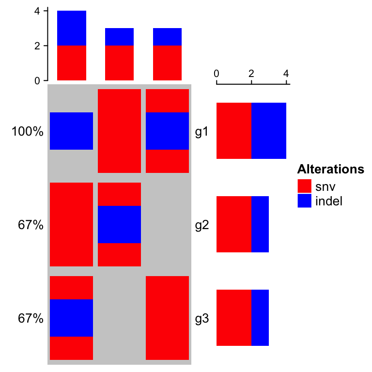
You can see the order in barplots also correspond to the order defined in
alter_fun. The grahpics in legend are based on the functions defined in alter_fun.
If you are confused of how to generated the matrix, there is a second way. The second type of input data is a list of matrix for which each matrix contains binary value representing whether the alteration is absent or present. The list should have names which correspond to the alteration types.
mat_list = list(snv = matrix(c(1, 0, 1, 1, 1, 0, 0, 1, 1), nrow = 3),
indel = matrix(c(1, 0, 0, 0, 1, 0, 1, 0, 0), nrow = 3))
rownames(mat_list$snv) = rownames(mat_list$indel) = c("g1", "g2", "g3")
colnames(mat_list$snv) = colnames(mat_list$indel) = c("s1", "s2", "s3")
mat_list## $snv
## s1 s2 s3
## g1 1 1 0
## g2 0 1 1
## g3 1 0 1
##
## $indel
## s1 s2 s3
## g1 1 0 1
## g2 0 1 0
## g3 0 0 0oncoPrint() expects all matrices in mat_list having same row names and
column names.
Pass mat_list to oncoPrint():
# now you don't need `get_type`
oncoPrint(mat_list,
alter_fun = list(
snv = function(x, y, w, h) grid.rect(x, y, w*0.9, h*0.9,
gp = gpar(fill = col["snv"], col = NA)),
indel = function(x, y, w, h) grid.rect(x, y, w*0.9, h*0.4,
gp = gpar(fill = col["indel"], col = NA))
), col = col)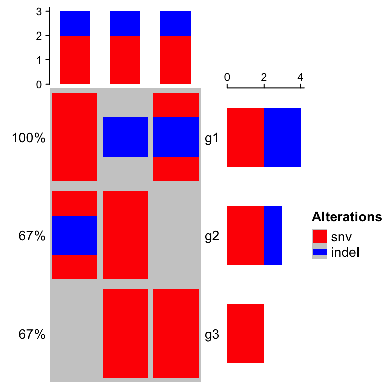
In following parts of this chapter, we still use the single matrix form mat
to specify the input data.
7.1.2 Define the alter_fun()
alter_fun is a list of functons which add graphics layer by layer (i.e.
first draw for snv, then for indel). Graphics can also be added in a
grid-by-grid style by specifying alter_fun as a single function. The
difference from the function list is now alter_fun should accept a fifth
argument which is a logical vector. This logical vector shows whether
different alterations exist for current gene in current sample.
Let’s assume in a grid there is only snv event, then v for this grid is:
## snv indel
## TRUE FALSEoncoPrint(mat,
alter_fun = function(x, y, w, h, v) {
if(v["snv"]) grid.rect(x, y, w*0.9, h*0.9, # v["snv"] is a logical value
gp = gpar(fill = col["snv"], col = NA))
if(v["indel"]) grid.rect(x, y, w*0.9, h*0.4, # v["indel"] is a logical value
gp = gpar(fill = col["indel"], col = NA))
}, col = col)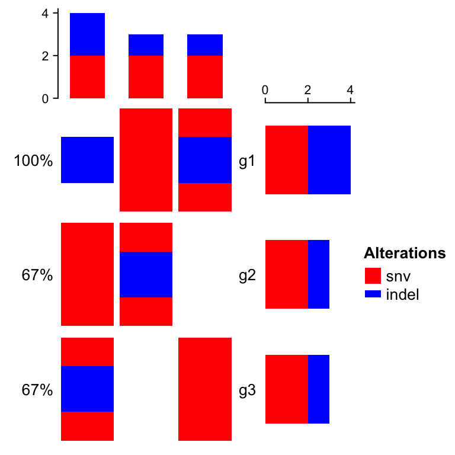
If alter_fun is set as a single function, customization can be more
flexible. In following example, the blue rectangles can have different height
in different grid.
oncoPrint(mat,
alter_fun = function(x, y, w, h, v) {
n = sum(v) # how many alterations for current gene in current sample
h = h*0.9
# use `names(which(v))` to correctly map between `v` and `col`
if(n) grid.rect(x, y - h*0.5 + 1:n/n*h, w*0.9, 1/n*h,
gp = gpar(fill = col[names(which(v))], col = NA), just = "top")
}, col = col)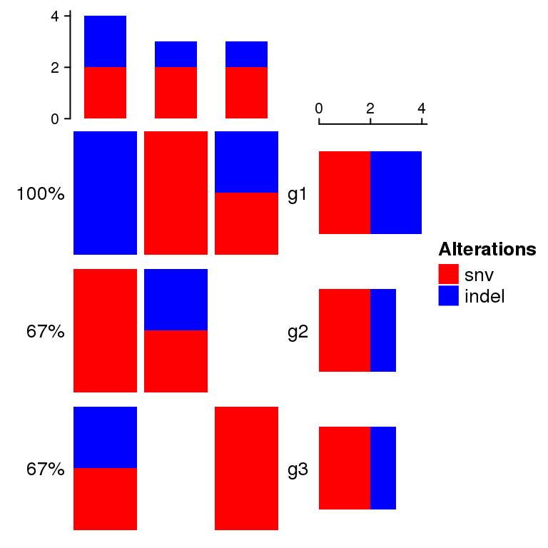
Following is a complicated example for alter_fun where triangles are used:
oncoPrint(mat,
alter_fun = list(
background = function(x, y, w, h) {
grid.polygon(
unit.c(x - 0.5*w, x - 0.5*w, x + 0.5*w),
unit.c(y - 0.5*h, y + 0.5*h, y - 0.5*h),
gp = gpar(fill = "grey", col = "white"))
grid.polygon(
unit.c(x + 0.5*w, x + 0.5*w, x - 0.5*w),
unit.c(y + 0.5*h, y - 0.5*h, y + 0.5*h),
gp = gpar(fill = "grey", col = "white"))
},
snv = function(x, y, w, h) {
grid.polygon(
unit.c(x - 0.5*w, x - 0.5*w, x + 0.5*w),
unit.c(y - 0.5*h, y + 0.5*h, y - 0.5*h),
gp = gpar(fill = col["snv"], col = "white"))
},
indel = function(x, y, w, h) {
grid.polygon(
unit.c(x + 0.5*w, x + 0.5*w, x - 0.5*w),
unit.c(y + 0.5*h, y - 0.5*h, y + 0.5*h),
gp = gpar(fill = col["indel"], col = "white"))
}
), col = col)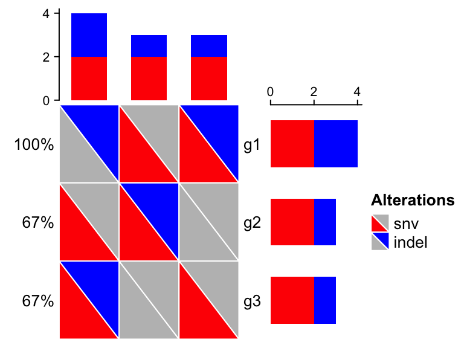
In some cases, you might need to define alter_fun for many alteration types.
If you are not sure about the visual effect of your alter_fun, you can use
test_alter_fun() to test your alter_fun. In following example, we defined
seven alteration functions:
alter_fun = list(
mut1 = function(x, y, w, h)
grid.rect(x, y, w, h, gp = gpar(fill = "red", col = NA)),
mut2 = function(x, y, w, h)
grid.rect(x, y, w, h, gp = gpar(fill = "blue", col = NA)),
mut3 = function(x, y, w, h)
grid.rect(x, y, w, h, gp = gpar(fill = "yellow", col = NA)),
mut4 = function(x, y, w, h)
grid.rect(x, y, w, h, gp = gpar(fill = "purple", col = NA)),
mut5 = function(x, y, w, h)
grid.rect(x, y, w, h, gp = gpar(fill = NA, lwd = 2)),
mut6 = function(x, y, w, h)
grid.points(x, y, pch = 16),
mut7 = function(x, y, w, h)
grid.segments(x - w*0.5, y - h*0.5, x + w*0.5, y + h*0.5, gp = gpar(lwd = 2))
)
test_alter_fun(alter_fun)## `alter_fun` is defined as a list of functions.
## Functions are defined for following alteration types:
## mut1, mut2, mut3, mut4, mut5, mut6, mut7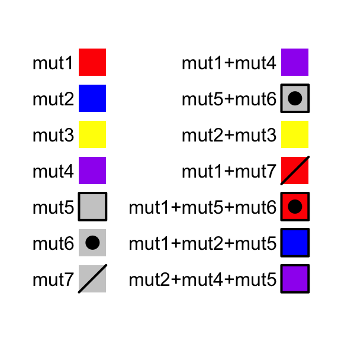
For the combination of alteration types, test_alter_fun() randomly samples
some of them.
test_alter_fun() works both for alter_fun as a list and as a single
function.
7.1.3 Background
If alter_fun is specified as a list, the order of the elements controls the
order of adding graphics. There is a special element called background which
defines how to draw background and it should be always put as the first
element in the alter_fun list. In following example, backgrond color is
changed to light green with borders.
oncoPrint(mat,
alter_fun = list(
background = function(x, y, w, h) grid.rect(x, y, w, h,
gp = gpar(fill = "#00FF0020")),
snv = function(x, y, w, h) grid.rect(x, y, w*0.9, h*0.9,
gp = gpar(fill = col["snv"], col = NA)),
indel = function(x, y, w, h) grid.rect(x, y, w*0.9, h*0.4,
gp = gpar(fill = col["indel"], col = NA))
), col = col)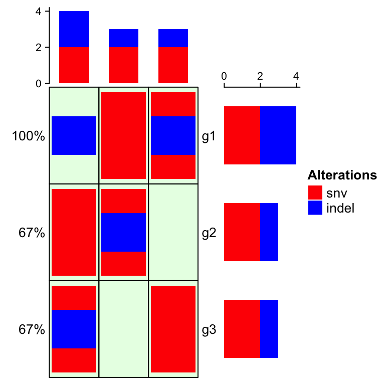
Or just remove the background (don’t set it to NULL. Setting background
directly to NULL means to use the default style of background whch is in
grey):
oncoPrint(mat,
alter_fun = list(
background = function(...) NULL,
snv = function(x, y, w, h) grid.rect(x, y, w*0.9, h*0.9,
gp = gpar(fill = col["snv"], col = NA)),
indel = function(x, y, w, h) grid.rect(x, y, w*0.9, h*0.4,
gp = gpar(fill = col["indel"], col = NA))
), col = col)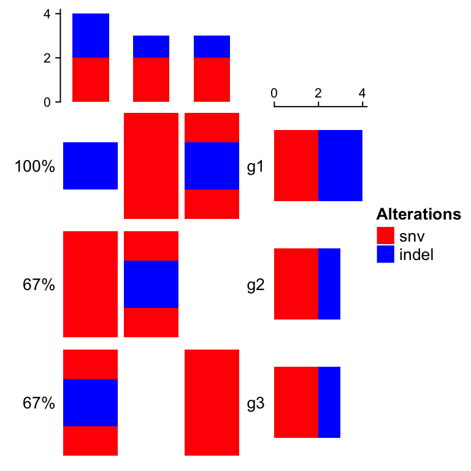
7.1.4 Complex alteration types
It is very easy to have many more different alteration types when integrating information from multiple analysis results. It is sometimes difficult to design graphics and assign different colors for them (e.g. see plot in this link. On the other hand, in these alteration types, there are primary classes of alteration types which is more important to distinguish, while there are secondary classes which is less important. For example, we may have alteration types of “intronic snv”, “exonic snv”, “intronic indel” and “exonic indel”. Actually we can classify them into two classes where “snv/indel” is more important and they belong to the primary class, and “intronic/exonic” is less important and they belong to the secondary class. Reflecting on the oncoPrint, for the “intronic snv” and “exonic snv”, we want to use similar graphics because they are snvs and we want them visually similar, and we add slightly different symbols to represent “intronic” and “exonic”, E.g. we can use red rectangle for snv and above the red rectangles, we use dots to represent “intronic” and cross lines to represent “exonic”. On the barplot annotations which summarize the number of different alteration types, we don’t want to separate “intronic snv” and “exonic snv” while we prefer to simply get the total number of snv to get rid of too many categories in the barplots.
{kind=link}
Let’s demonstrate this scenario by following simulated data. To simplify the example, we assume for a single gene in a single sample, it only has either snv or indel and it can only be either intronic or exonic. If there is no “intronic” or “exonic” attached to the gene, it basically means we don’t have this gene-related information (maybe it is an intergenic snv/indel).
set.seed(123)
x1 = sample(c("", "snv"), 100, replace = TRUE, prob = c(8, 2))
x2 = sample(c("", "indel"), 100, replace = TRUE, prob = c(8, 2))
x2[x1 == "snv"] = ""
x3 = sample(c("", "intronic"), 100, replace = TRUE, prob = c(5, 5))
x4 = sample(c("", "exonic"), 100, replace = TRUE, prob = c(5, 5))
x3[x1 == "" & x2 == ""] = ""
x4[x1 == "" & x2 == ""] = ""
x4[x3 == "intronic"] = ""
x = apply(cbind(x1, x2, x3, x4), 1, function(x) {
x = x[x != ""]
paste(x, collapse = ";")
})
m = matrix(x, nrow = 10, ncol = 10, dimnames = list(paste0("g", 1:10), paste0("s", 1:10)))
m[1:4, 1:4]## s1 s2 s3 s4
## g1 "" "snv;intronic" "snv;intronic" "snv"
## g2 "" "" "" "snv;intronic"
## g3 "" "" "" ""
## g4 "snv" "indel;exonic" "snv" ""Now in m, there are four different alteration types: snv, indel,
intronic and exonic. Next we define alter_fun for the four alterations.
alter_fun = list(
background = function(x, y, w, h)
grid.rect(x, y, w*0.9, h*0.9, gp = gpar(fill = "#CCCCCC", col = NA)),
# red rectangles
snv = function(x, y, w, h)
grid.rect(x, y, w*0.9, h*0.9, gp = gpar(fill = "red", col = NA)),
# blue rectangles
indel = function(x, y, w, h)
grid.rect(x, y, w*0.9, h*0.9, gp = gpar(fill = "blue", col = NA)),
# dots
intronic = function(x, y, w, h)
grid.points(x, y, pch = 16),
# crossed lines
exonic = function(x, y, w, h) {
grid.segments(x - w*0.4, y - h*0.4, x + w*0.4, y + h*0.4, gp = gpar(lwd = 2))
grid.segments(x + w*0.4, y - h*0.4, x - w*0.4, y + h*0.4, gp = gpar(lwd = 2))
}
)For the alteration types in the primary class (snv and indel), we use
colorred rectangles to represent them because the rectangles are visually
obvious, while for the alteration types in the secondary class (intronic and
exonic), we only use simple symbols (dots for intronic and crossed
diagonal lines for exonic). Since there is no color corresponding to
intronic and exonic, we don’t need to define colors for these two types,
and on the barplot annotation for genes and samples, only snv and indel
are visualized (so the height for snv in the barplot corresponds the number
of intronic snv plus exonic snv).
# we only define color for snv and indel, so barplot annotations only show snv and indel
oncoPrint(m, alter_fun = alter_fun, col = c(snv = "red", indel = "blue"))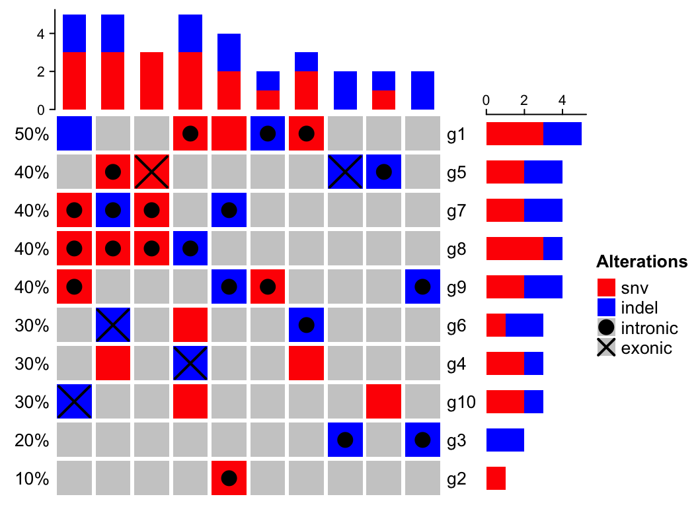
7.1.5 Simplify alter_fun
If the graphics are only simple graphics, e.g., rectangles, points, the graphic
functions can be automatically generated by alter_graphic() function. One of previous example
can be simplied as:
oncoPrint(mat,
alter_fun = list(
snv = alter_graphic("rect", width = 0.9, height = 0.9, fill = col["snv"]),
indel = alter_graphic("rect", width = 0.9, height = 0.4, fill = col["indel"])
), col = col)
7.2 Apply to cBioPortal dataset
We use a real-world dataset to demonstrate advanced usage of oncoPrint().
The data is retrieved from cBioPortal.
Steps for getting the data are as follows:
- go to http://www.cbioportal.org,
- search Cancer Study: “Lung Adenocarcinoma Carcinoma” and select: “Lung Adenocarcinoma Carcinoma (TCGA, Provisinal)”,
- in “Enter Gene Set” field, select: “General: Ras-Raf-MEK-Erk/JNK signaling (26 genes)”,
- submit the form.
In the result page,
- go to “Download” tab, download text in “Type of Genetic alterations across all cases”.
The order of samples can also be downloaded from the results page,
- go to “OncoPrint” tab, move the mouse above the plot, click “download” icon and click “Sample order”.
The data is already in ComplexHeatmap package. First we read the data and make some pre-processing.
mat = read.table(system.file("extdata", package = "ComplexHeatmap",
"tcga_lung_adenocarcinoma_provisional_ras_raf_mek_jnk_signalling.txt"),
header = TRUE, stringsAsFactors = FALSE, sep = "\t")
mat[is.na(mat)] = ""
rownames(mat) = mat[, 1]
mat = mat[, -1]
mat= mat[, -ncol(mat)]
mat = t(as.matrix(mat))
mat[1:3, 1:3]## TCGA-05-4384-01 TCGA-05-4390-01 TCGA-05-4425-01
## KRAS " " "MUT;" " "
## HRAS " " " " " "
## BRAF " " " " " "There are three different alterations in mat: HOMDEL, AMP and MUT. We first
define how to add graphics for different alterations.
col = c("HOMDEL" = "blue", "AMP" = "red", "MUT" = "#008000")
alter_fun = list(
background = function(x, y, w, h) {
grid.rect(x, y, w-unit(2, "pt"), h-unit(2, "pt"),
gp = gpar(fill = "#CCCCCC", col = NA))
},
# big blue
HOMDEL = function(x, y, w, h) {
grid.rect(x, y, w-unit(2, "pt"), h-unit(2, "pt"),
gp = gpar(fill = col["HOMDEL"], col = NA))
},
# big red
AMP = function(x, y, w, h) {
grid.rect(x, y, w-unit(2, "pt"), h-unit(2, "pt"),
gp = gpar(fill = col["AMP"], col = NA))
},
# small green
MUT = function(x, y, w, h) {
grid.rect(x, y, w-unit(2, "pt"), h*0.33,
gp = gpar(fill = col["MUT"], col = NA))
}
)Just a note, since the graphics are all rectangles, they can be simplied by generating by alter_graphic():
# just for demonstration
alter_fun = list(
background = alter_graphic("rect", fill = "#CCCCCC"),
HOMDEL = alter_graphic("rect", fill = col["HOMDEL"]),
AMP = alter_graphic("rect", fill = col["AMP"]),
MUT = alter_graphic("rect", height = 0.33, fill = col["MUT"])
)Now we make the oncoPrint. We save column_title and heatmap_legend_param
as varaibles because they are used multiple times in following code chunks.
column_title = "OncoPrint for TCGA Lung Adenocarcinoma, genes in Ras Raf MEK JNK signalling"
heatmap_legend_param = list(title = "Alternations", at = c("HOMDEL", "AMP", "MUT"),
labels = c("Deep deletion", "Amplification", "Mutation"))
oncoPrint(mat,
alter_fun = alter_fun, col = col,
column_title = column_title, heatmap_legend_param = heatmap_legend_param)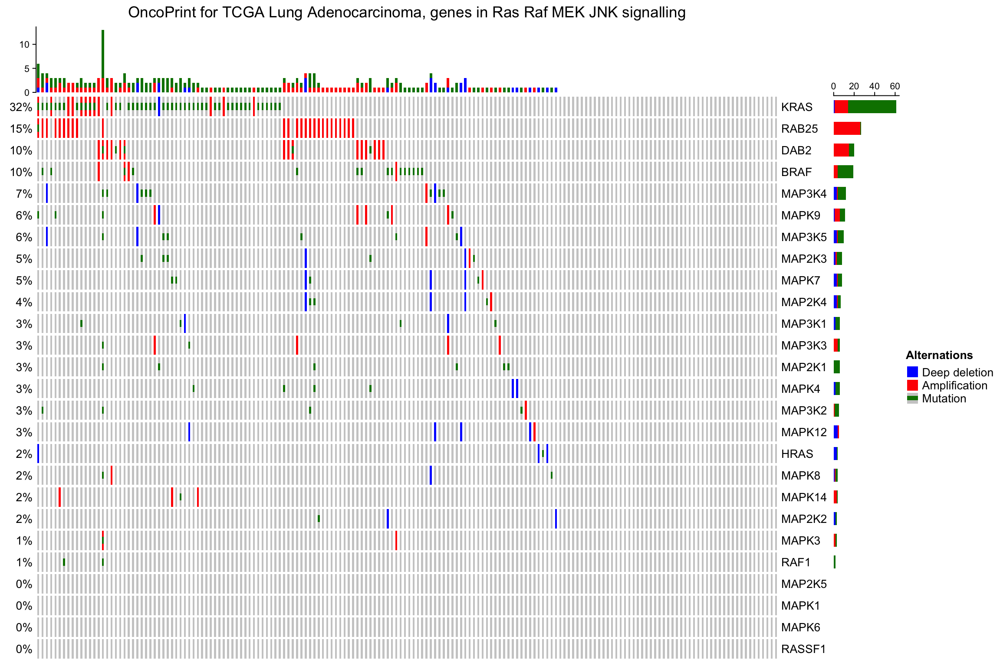
As you see, the genes and samples are reordered automatically. Rows are sorted based on the frequency of the alterations in all samples and columns are reordered to visualize the mutual exclusivity between samples. The column reordering is based on the “memo sort” method, adapted from https://gist.github.com/armish/564a65ab874a770e2c26.
7.2.1 Remove empty rows and columns
By default, if samples or genes have no alterations, they will still remain in
the heatmap, but you can set remove_empty_columns and remove_empty_rows to
TRUE to remove them:
oncoPrint(mat,
alter_fun = alter_fun, col = col,
remove_empty_columns = TRUE, remove_empty_rows = TRUE,
column_title = column_title, heatmap_legend_param = heatmap_legend_param)
The number of rows and columns may be reduced after empty rows and columns are
removed. All the components of the oncoPrint are adjusted accordingly. When
the oncoPrint is concatenated with other heatmaps and annotations, this may
cause a problem that the number of rows or columns are not all identical in
the heatmap list. So, if you put oncoPrint into a heatmap list and you don’t
want to see empty rows or columns, you need to remove them manually before
sending to oncoPrint() function (this preprocess should be very easy for
you!).
7.2.2 Reorder the oncoPrint
As the normal Heatmap() function, row_order or column_order can be
assigned with a vector of orders (either numeric or character). In following
example, the order of samples are gathered from cBio as well. You can see the
difference for the sample order between ‘memo sort’ and the method used by
cBio.
sample_order = scan(paste0(system.file("extdata", package = "ComplexHeatmap"),
"/sample_order.txt"), what = "character")
oncoPrint(mat,
alter_fun = alter_fun, col = col,
row_order = 1:nrow(mat), column_order = sample_order,
remove_empty_columns = TRUE, remove_empty_rows = TRUE,
column_title = column_title, heatmap_legend_param = heatmap_legend_param)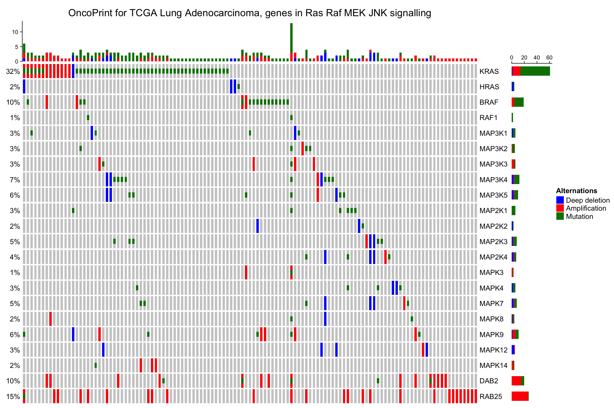
Again, row_order and column_order are automatically adjusted if
remove_empty_rows and remove_empty_columns are set to TRUE.
7.2.3 OncoPrint annotations
The oncoPrint has several pre-defined annotations.
On top and right of the oncoPrint, there are barplots showing the number of different alterations for each gene or for each sample, and on the left of the oncoPrint is a text annotation showing the percent of samples that have alterations for every gene.
The barplot annotation is implemented by anno_oncoprint_barplot() where you
can set the the annotation there. Barplots by default draw for all alteration
types, but you can also select subset of alterations to put on barplots by
setting in anno_oncoprint_barplot(). anno_oncoprint_barplot() is a simple
wrapper around anno_barplot() where the frequency matrix in just interanlly
calculated. See following example:
oncoPrint(mat,
alter_fun = alter_fun, col = col,
top_annotation = HeatmapAnnotation(
column_barplot = anno_oncoprint_barplot("MUT", border = TRUE, # only MUT
height = unit(4, "cm"))
),
right_annotation = rowAnnotation(
row_barplot = anno_oncoprint_barplot(c("AMP", "HOMDEL"), # only AMP and HOMDEL
border = TRUE, height = unit(4, "cm"),
axis_param = list(side = "bottom", labels_rot = 90))
),
remove_empty_columns = TRUE, remove_empty_rows = TRUE,
column_title = column_title, heatmap_legend_param = heatmap_legend_param)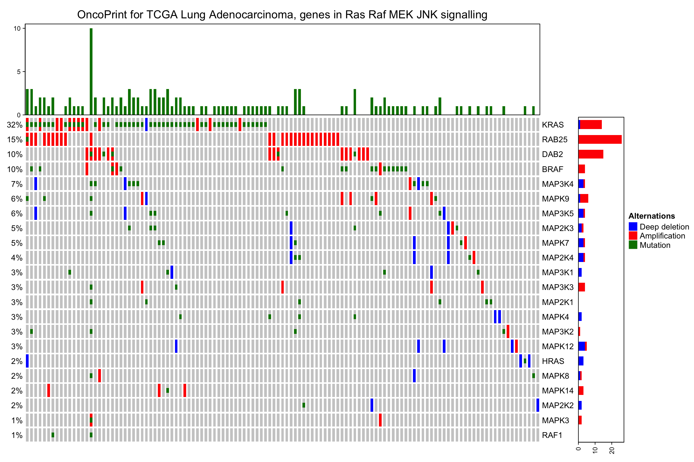
By default the barplot annotation shows the frequencies. The values can be changed
to fraction by setting show_fraction = TRUE in anno_oncoprint_barplot():
oncoPrint(mat,
alter_fun = alter_fun, col = col,
top_annotation = HeatmapAnnotation(
column_barplot = anno_oncoprint_barplot(show_fraction = TRUE)
),
right_annotation = rowAnnotation(
row_barplot = anno_oncoprint_barplot(show_fraction = TRUE)
),
remove_empty_columns = TRUE, remove_empty_rows = TRUE,
column_title = column_title, heatmap_legend_param = heatmap_legend_param)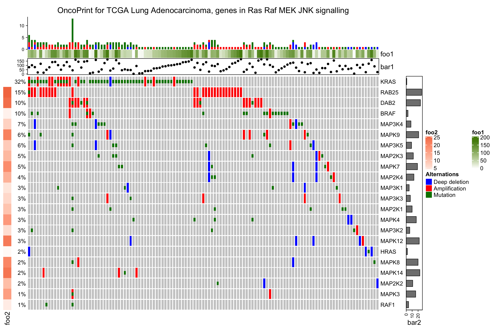
The percent values and row names are internally constructed as text
annotations. You can set show_pct and show_row_names to turn them on or
off. pct_side and row_names_side controls the sides where they are put.
oncoPrint(mat,
alter_fun = alter_fun, col = col,
remove_empty_columns = TRUE, remove_empty_rows = TRUE,
pct_side = "right", row_names_side = "left",
column_title = column_title, heatmap_legend_param = heatmap_legend_param)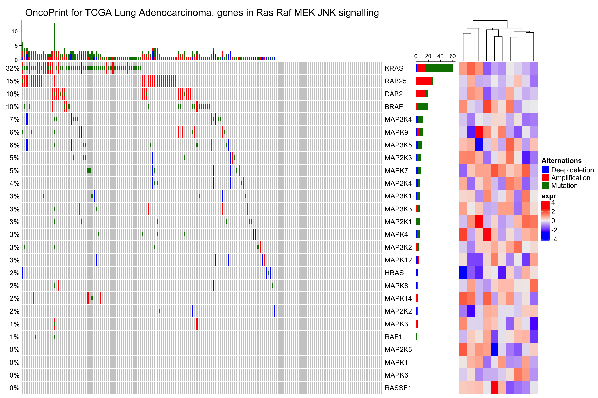
The barplot annotation for oncoPrint are essentially normal annotations, you
can add more annotations in HeatmapAnnotation() or rowAnnotation() in the
normal way:
oncoPrint(mat,
alter_fun = alter_fun, col = col,
remove_empty_columns = TRUE, remove_empty_rows = TRUE,
top_annotation = HeatmapAnnotation(cbar = anno_oncoprint_barplot(),
foo1 = 1:172,
bar1 = anno_points(1:172)
),
left_annotation = rowAnnotation(foo2 = 1:26),
right_annotation = rowAnnotation(bar2 = anno_barplot(1:26)),
column_title = column_title, heatmap_legend_param = heatmap_legend_param)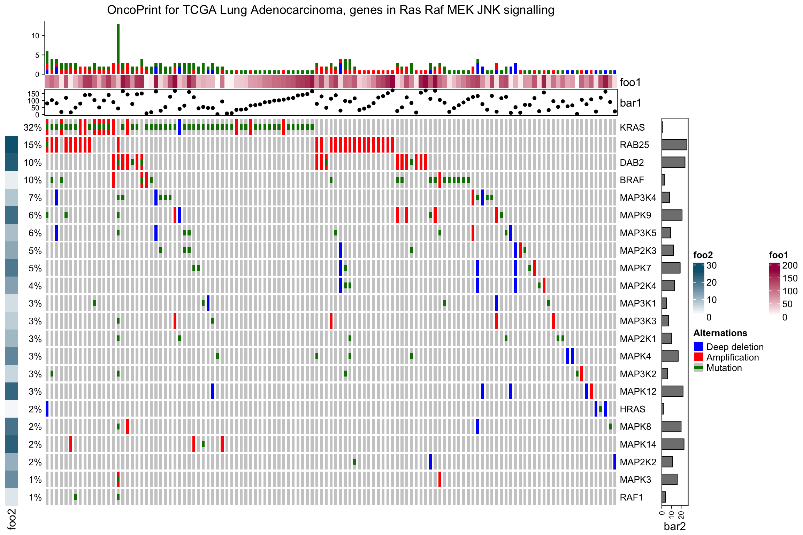
As you see, the percent annotation, the row name annotation and the oncoPrint
annotation are appended to the user-specified annotation by default. Also
annotations are automatically adjusted if remove_empty_columns and
remove_empty_rows are set to TRUE.
7.2.4 oncoPrint as a Heatmap
oncoPrint() actually returns a Heatmap object, so you can add more
heatmaps and annotations horizontally or vertically to visualize more
complicated associations.
Following example adds a heatmap horizontally. Remember you can always add row annotations to the heatmap list.
ht_list = oncoPrint(mat,
alter_fun = alter_fun, col = col,
column_title = column_title, heatmap_legend_param = heatmap_legend_param) +
Heatmap(matrix(rnorm(nrow(mat)*10), ncol = 10), name = "expr", width = unit(4, "cm"))
draw(ht_list)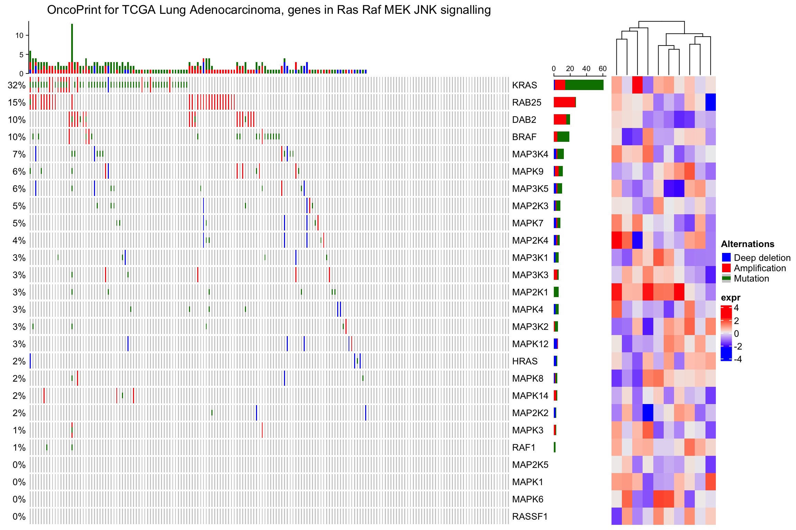
or add it vertically:
ht_list = oncoPrint(mat,
alter_fun = alter_fun, col = col,
column_title = column_title, heatmap_legend_param = heatmap_legend_param) %v%
Heatmap(matrix(rnorm(ncol(mat)*10), nrow = 10), name = "expr", height = unit(4, "cm"))
draw(ht_list)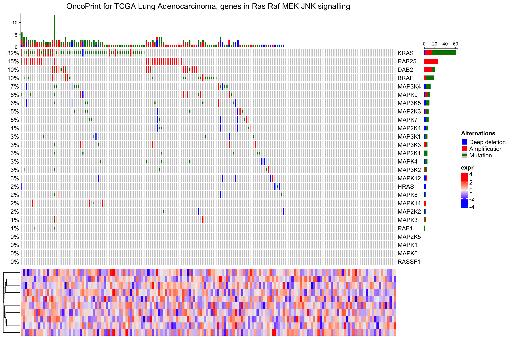
Similar as normal heatmap list, you can split the heatmap list:
ht_list = oncoPrint(mat,
alter_fun = alter_fun, col = col,
column_title = column_title, heatmap_legend_param = heatmap_legend_param) +
Heatmap(matrix(rnorm(nrow(mat)*10), ncol = 10), name = "expr", width = unit(4, "cm"))
draw(ht_list, row_split = sample(c("a", "b"), nrow(mat), replace = TRUE))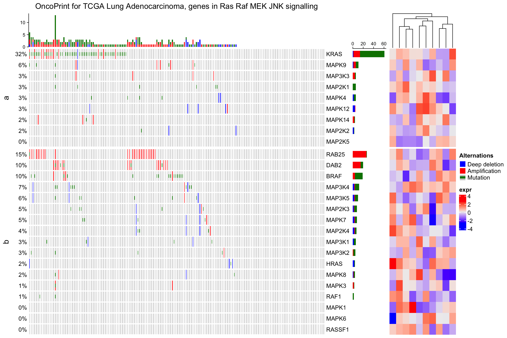
When remove_empty_columns or remove_empty_rows is set to TRUE, the
number of genes or the samples may not be the original number. If the original
matrix has row names and column names. The subset of rows and columns can be
get as follows:
ht = oncoPrint(mat,
alter_fun = alter_fun, col = col,
remove_empty_columns = TRUE, remove_empty_rows = TRUE,
column_title = column_title, heatmap_legend_param = heatmap_legend_param)
rownames(ht@matrix)## [1] "KRAS" "HRAS" "BRAF" "RAF1" "MAP3K1" "MAP3K2" "MAP3K3" "MAP3K4"
## [9] "MAP3K5" "MAP2K1" "MAP2K2" "MAP2K3" "MAP2K4" "MAPK3" "MAPK4" "MAPK7"
## [17] "MAPK8" "MAPK9" "MAPK12" "MAPK14" "DAB2" "RAB25"## [1] "TCGA-05-4390-01" "TCGA-38-4631-01" "TCGA-44-6144-01" "TCGA-44-6145-01"
## [5] "TCGA-44-6146-01" "TCGA-49-4488-01" "TCGA-50-5930-01" "TCGA-50-5931-01"
## [9] "TCGA-50-5932-01" "TCGA-50-5933-01" "TCGA-50-5941-01" "TCGA-50-5942-01"
## [13] "TCGA-50-5944-01" "TCGA-50-5946-01" "TCGA-50-6591-01" "TCGA-50-6592-01"
## [17] "TCGA-50-6594-01" "TCGA-67-4679-01" "TCGA-67-6215-01" "TCGA-73-4658-01"
## [21] "TCGA-73-4676-01" "TCGA-75-5122-01" "TCGA-75-5125-01" "TCGA-75-5126-01"
## [25] "TCGA-75-6206-01" "TCGA-75-6211-01" "TCGA-86-6562-01" "TCGA-05-4396-01"
## [29] "TCGA-05-4405-01" "TCGA-05-4410-01" "TCGA-05-4415-01" "TCGA-05-4417-01"
## [33] "TCGA-05-4424-01" "TCGA-05-4427-01" "TCGA-05-4433-01" "TCGA-44-6774-01"
## [37] "TCGA-44-6775-01" "TCGA-44-6776-01" "TCGA-44-6777-01" "TCGA-44-6778-01"
## [41] "TCGA-49-4487-01" "TCGA-49-4490-01" "TCGA-49-6744-01" "TCGA-49-6745-01"
## [45] "TCGA-49-6767-01" "TCGA-50-5044-01" "TCGA-50-5051-01" "TCGA-50-5072-01"
## [49] "TCGA-50-6590-01" "TCGA-55-6642-01" "TCGA-55-6712-01" "TCGA-71-6725-01"
## [53] "TCGA-91-6828-01" "TCGA-91-6829-01" "TCGA-91-6835-01" "TCGA-91-6836-01"
## [57] "TCGA-35-3615-01" "TCGA-44-2655-01" "TCGA-44-2656-01" "TCGA-44-2662-01"
## [61] "TCGA-44-2666-01" "TCGA-44-2668-01" "TCGA-55-1592-01" "TCGA-55-1594-01"
## [65] "TCGA-55-1595-01" "TCGA-64-1676-01" "TCGA-64-1677-01" "TCGA-64-1678-01"
## [69] "TCGA-64-1680-01" "TCGA-67-3771-01" "TCGA-67-3773-01" "TCGA-67-3774-01"
## [73] "TCGA-05-4244-01" "TCGA-05-4249-01" "TCGA-05-4250-01" "TCGA-35-4122-01"
## [77] "TCGA-35-4123-01" "TCGA-44-2657-01" "TCGA-44-3398-01" "TCGA-44-3918-01"
## [81] "TCGA-05-4382-01" "TCGA-05-4389-01" "TCGA-05-4395-01" "TCGA-05-4397-01"
## [85] "TCGA-05-4398-01" "TCGA-05-4402-01" "TCGA-05-4403-01" "TCGA-05-4418-01"
## [89] "TCGA-05-4420-01" "TCGA-05-4422-01" "TCGA-05-4426-01" "TCGA-05-4430-01"
## [93] "TCGA-05-4434-01" "TCGA-38-4625-01" "TCGA-38-4626-01" "TCGA-38-4628-01"
## [97] "TCGA-38-4630-01" "TCGA-44-3396-01" "TCGA-49-4486-01" "TCGA-49-4505-01"
## [101] "TCGA-49-4506-01" "TCGA-49-4507-01" "TCGA-49-4510-01" "TCGA-73-4659-01"
## [105] "TCGA-73-4662-01" "TCGA-73-4668-01" "TCGA-73-4670-01" "TCGA-73-4677-01"
## [109] "TCGA-05-5428-01" "TCGA-05-5715-01" "TCGA-50-5045-01" "TCGA-50-5049-01"
## [113] "TCGA-50-5936-01" "TCGA-55-5899-01" "TCGA-64-5774-01" "TCGA-64-5775-01"
## [117] "TCGA-64-5778-01" "TCGA-64-5815-01" "TCGA-75-5146-01" "TCGA-75-5147-01"
## [121] "TCGA-80-5611-01"